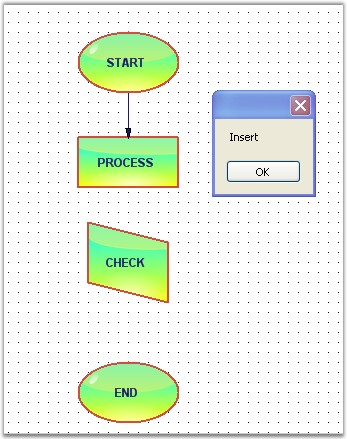
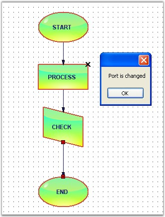

The below events gets fired while the connection is created between two nodes.
The below table explains the Connections and Ports events.
|
DocumentEventSink |
Description |
|
ConnectionsChanged |
Triggered after the connection is changed. |
|
PortsChanged |
Triggered when ports are added or changed. |
Data can be retrieved or set using the following members.
|
Connection and Port EventArgs Member |
Description |
|
Cancel |
Cancels the ConnectionChanging event. |
|
ChangeType |
It returns the following possible values, Insert - whether the node is inserted, Remove – whether the node is removed. |
|
Element |
Returns whether the head or tail end is moved. |
|
Elements |
Returns the elements collection on which the event occurs. |
|
Index |
Returns the zero-based index into the collection on which the event occurred. |
|
Owner |
Returns the owner object. This is a read-only boolean value. |
Connection Events
Programmatically, the Connection Event is handled as follows.
|
[C#]
public void Form1_Load(object sender, EventArgs e) {
((DocumentEventSink)model1.EventSink).ConnectionsChanged += new CollectionExEventHandler(Form1_ConnectionsChanged); LineConnector line = new LineConnector(circle.PinPoint, polygon.PinPoint); polygon.CentralPort.TryConnect(line.HeadEndPoint); circle.CentralPort.TryConnect(line.TailEndPoint); model1.AppendChild(line); } void Form1_ConnectionsChanged(CollectionExEventArgs evtArgs) { MessageBox.Show(evtArgs.ChangeType.ToString()); } |
|
[VB]
Public Sub Form1_Load(ByVal sender As Object, ByVal e As EventArgs) AddHandler DirectCast(model1.EventSink, DocumentEventSink).ConnectionsChanged, AddressOf Form1_ConnectionsChanged Dim line As New LineConnector(circle.PinPoint, polygon.PinPoint) polygon.CentralPort.TryConnect(line.HeadEndPoint) circle.CentralPort.TryConnect(line.TailEndPoint) model1.AppendChild(line) End Sub Private Sub Form1_ConnectionsChanged(ByVal evtArgs As CollectionExEventArgs) MessageBox.Show(evtArgs.ChangeType.ToString()) End Sub |
Sample diagram is as follows:

Figure 63: ConnectionChanged Event
Ports Events
Programmatically, the events are handled as follows.
|
[C#]
public void Form1_Load(object sender, EventArgs e) { ((DocumentEventSink)model1.EventSink).PortsChanged += new CollectionExEventHandler(Form1_PortsChanged); node.EnableCentralPort = false; }
void Form1_PortsChanged(CollectionExEventArgs evtArgs) { MessageBox.Show("Port is changed"); } |
|
[VB]
Public Sub Form1_Load(ByVal sender As Object, ByVal e As EventArgs) AddHandler DirectCast(model1.EventSink, DocumentEventSink).PortsChanged, AddressOf Form1_PortsChanged node.EnableCentralPort = False End Sub
Private Sub Form1_PortsChanged(ByVal evtArgs As CollectionExEventArgs) MessageBox.Show("Port is changed") End Sub |
Sample diagram is as follows:

Figure 64: PortChanged Event